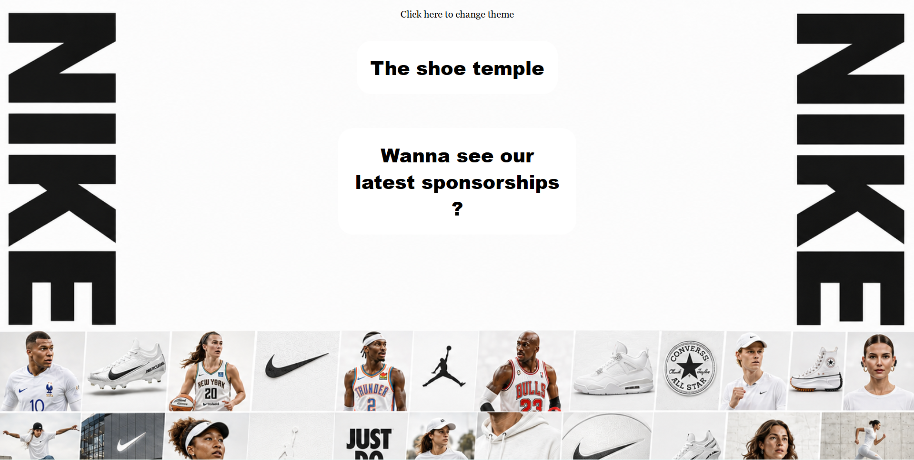

In this section you'll dsicover the projects I built and those I am working on.
You'll also see any amelioration I wish to do to an existing project.
What are my actually building ?
Nike Website
This is a Nike website that I built. In it you can find the the main Nike products and their popular collabs

Alan XAI
Alan_XAI is a slack bot that executes slash commands in Slack! You have to enter a command like
/alan-xai-ping to get it done. Btw, the command I just mentioned is to know the bot's latency.
I found this one a little challenging as I am new to JS and Nest, but I don't give up!
Zennith
This is a web app that helps users to know the first aid moves they must apply in an emergency situation.
The app shows them the appropriate moves which is given according to age and emergency type.
The project features really simple instructions to follow up to save someone's life within seconds. Everything
is made such that the user does not strain in panic when an emergency shows up.
What did I already build (and is on standby 😭)
Automatic Lighting System - Alan XSmart
This is one of my dream project. It is one of the fisrt projects I did on my own, and the only
hardware project I did on my own. Well, saying hardware is a little not honest, since till date,
I only designed the algorithm.
This project consist of a system of interconnected sensors connected to a board - for the moment an
Arduino Uno - that, with the help of an algorithm, manages the different independent units of the
system - like the plant watering unit or the light control unit.
School Website
You'll notice I already mentioned this one earlier. This one too
is still pending, and honestly I don’t know why. It's strange but those who are used to group project
often have that feeling of stagnancy for no good reason.
The name speaks for itself. It is my school's website - 1500 secondary school students - and is supposed
to
be used by mid-term next year.
It features all you could possibly imagine of such a website: admission requirements, school life, clubs etc.
By the way, the school is Tsimi Evouna Bilingual Institute